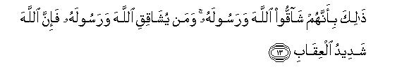
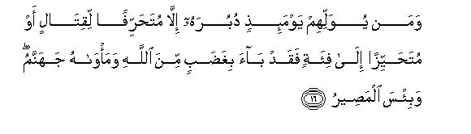
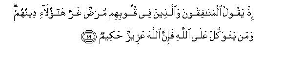

بسم الله الرحمن الرحيم
Sayyid Abul Ala Maududi - Tafhim al-Qur'an - The Meaning of the Qur'an
 8.
Surah Al Anfal (The Spoils of War)
8.
Surah Al Anfal (The Spoils of War)
The Surah takes its name Al-Anfal (The Bounties) from the first verse.
It was revealed in 2 A. H. after the Battle of Badr, the first battle between Islam and kufr. As it contains a detailed and comprehensive review of the Battle, it appears that most probably it was revealed at one and the same time. But it is also possible that some of the verses concerning the problems arising as a result of this Battle might have been revealed later and incorporated at the proper places to make it a continuous whole. At any rate, in the whole Surah there is nothing that might show that it is a collection of a couple of discourses, that have been patched up together.
Before reviewing the Surah, it is worthwhile to consider the events that led to the Battle of Badr.
During the first decade or so of the Prophethood at Makkah, the Message had proved its firmness, and stability. This was the result of two things. First, the Messenger, who possessed the highest qualities of character, was performing his Mission with wisdom, foresight and magnanimity. He had shown by his conduct that he had made up his mind to carry the movement to a successful end and, therefore, was ready to face all sorts of dangers and obstacles in the way. Secondly, the Message was so charming that it attracted the minds and hearts of the people irresistibly towards itself. So much so that all obstacles of ignorance, superstition and petty prejudices failed to check, its advance. That is why the Arab upholders of the ways of "ignorance,' who looked down upon it in its initial stages, had' begun to reckon it as a serious menace during the last period of the stay of the Holy Prophet at Makkah, and were bent on crushing it with all the force at their command. But in spite of the above-mentioned strength, the movement still lacked certain things to lead it to victory:-
First, it had not yet been fully proved that it had gathered round it a sufficient number of such followers who not only believed in its truth, but also had such an intense devotion to its principles that they were ready to expend all their energies and all that they possessed in the struggle for its success and establishment. So much so that they were ready to sacrifice their lives in the fight against the whole world itself even though they should be their own nearest relative. It is true that the followers of Islam had endured the severest persecutions at the hands of the Quraish of Makkah and had given a good proof of the firmness of their faith and their strong relation with Islam, yet further trials were required to show that Islam had succeeded in acquiring such a band of followers which considered nothing dearer than its ideal and was ready to sacrifice life for it.
Secondly, though the voice of Islam had reached' every part of the country, its effects were yet scattered and its acquired strength was spread here and there: it had not yet gathered sufficient force essential for a decisive conflict with the old established order of "ignorance".
Thirdly, Islam had yet no home of its own and had not established itself firmly anywhere in the land where it could consolidate its power and make it a base for further action. For the Muslims were scattered all over the country and were living among the unbelievers as aliens whom their bloodthirsty enemies wanted to uproot from their own homes.
Fourthly, the Muslims had not yet had an opportunity to demonstrate practically the blessings of the system of life based on Islam. There was neither any Islamic culture, nor any social, economic or political system; nor were there any established principles of war and peace for their guidance. Therefore the Muslims had no opportunity for demonstrating those moral principles on which they intended to build their entire system of life; nor had it been proved on the touchstone of trial that the Muslims as a community were sincere in their proclamation of the Message.
Allah created opportunities for making up these deficiencies.
During the last four years or so of the Prophet's stay at Makkah, the voice of Islam had been proving effective at Yathrab and the people for various reasons had been accepting the message more readily than other clans of Arabia. So much so that in the twelfth year of Prophethood on the occasion of Haj a deputation of 75 people met the Holy Prophet in the darkness of night. These people not only accepted Islam, but also offered to give him and his followers a home. As this was a most epoch making opportunity provided by Allah, the Holy Prophet took advantage of it.
The significance of this offer was quite clear to the people of Yathrab, and they fully realized that this was not an invitation to a mere fugitive, but to the Messenger of Allah so that he should become their leader and ruler. Likewise they knew that they were not inviting the Muslim refugees to give them shelter from persecution but to assemble them from all over the country for their integration with themselves to form an organized community. Thus the offer of the people of Yathrab was to make Yathrab the "City of Islam." Accordingly the Holy Prophet accepted their invitation and made it the first "City of Islam" in Arabia.
And the people of Yathrab were fully aware of the implications of this offer. It was indeed a declaration of war against the whole of Arabia, and an invitation to their own social and economic boycott as well. And when the Ansar from Yathrab declared their allegiance to the Holy Prophet at Aqabah, they knew fully well its consequences. During the course of the formal declaration of allegiance, Asad-bin- Zurarah, the youngest of all the delegates from Yathrab, stood up and said, "0 people of Yathrab! Just listen to me and consider the matter carefully in all its aspects. Though we have come to him, regarding him only as a Messenger of Allah, we should know that we shall be inviting the enmity of the whole of Arabia. For when we take him away to Yathrab, we shall be attacked and our children may be put to the sword. Therefore if you have the courage in your hearts to face it, then and then only, you should declare your allegiance to him and Allah will give you its reward. But if you love your lives more than him and his Message, then leave this matter and frankly excuse yourselves, for at this time Allah may accept your excuses."
Abbas bin Ubadah bin Naalah, another member of the delegation, reiterated the same thing, saying,
Do you understand the implication of the declaration of your allegiance to this person?" (Voices, "Yes, we know it.") "You are challenging the whole world to war by your declaration of allegiance to him. There is every likelihood of a serious menace to your lives and properties. Therefore consider it well. If you have any idea lurking in your minds that you will then hand him over to his enemies, it is much better to leave him alone now, because that conduct shall bring shame and disgrace to you in this world and the next. On the other hand, if you have sincerely resolved that you will endure all kinds of consequences that will follow as a result of this invitation, then it would be the best thing to take the oath of allegiance to him because, by God, this will surely bring good to you in this world as well as in the next world."
At this all the members of the delegation cried with one voice, "We are ready and prepared to risk all our wealth and our noble kith and kin for his sake."
It was then that the famous oath of allegiance, which is known as the "Second Oath of Allegiance at Aqabah" was taken.
On the other side, the people of Makkah also understood fully well the implications of this matter from their own point of view. They realized that Muhammad (Allah's peace be upon him), who, they knew well, had a great personality and possessed extraordinary abilities, was going to gain a strong footing, by this allegiance. For this would help integrate his followers, whose constancy, determination, and unwavering fidelity to the Messenger had been tried, into a disciplined community under his wise leadership and guidance. And they knew that this would spell death for their old ways of life. They also realized the strategic importance of. Al-Madinah to their trade, which was their chief means of livelihood.
Its geographical position was such that the Muslims could strike with advantage at the caravans traveling on the trade route between Yemen and Syria, and thus strike at the root of their economy and that of other pagan clans very effectively. The value of the trade done by the people of Makkah alone on this route, not to count that of raif and other places, amounted to about two hundred thousand dinars annually.
As the Quraish were fully aware of the implications of the oath of allegiance at Aqabah, they were greatly perturbed when they got wind of it the same night. At first they tried to win over the people of Al-Madinah to their side. But when they saw that the Muslims were migrating to Al- Madinah in small groups, they realized that the Holy Prophet was also going to emigrate soon from there. Then they decided to adopt an extreme measure to prevent this danger.
A few days before his migration, the Quraish held a council to consider the matter. After a good deal of argument; they decided that one person should be taken from each of the families of Quraish other than that of Banu Hashim to put an end to the life of the Holy Prophet. This was to make it difficult for the family of the Holy Prophet to fight alone with all the other families of the Quraish and thus to force them to accept blood-money for his murder-instead of taking revenge from them, but by the grace of Allah their plot against the life of the Holy Prophet failed because of his admirable foresight and full trust in Allah, and he reached Al- Madinah safe and sound. When they could not prevent his emigration, it occurred to them to exploit Abdullah bin Ub`ai who had begun to cherish a grievance against the Holy Prophet since his arrival at Al-Madinah. He was an influential chief of Al-Madinah and the people had agreed to make him their king. But when the majority of Aus and Khazraj clan became Muslims and acknowledged the Holy Prophet as their leader, guide and ruler, all his hopes of becoming a king came to an end. Therefore the Quraish wrote to him, "As you have given shelter to our enemy, we tell you plainly that you should either fight with him yourself or exile him from your city otherwise we swear by God that we will invade your city, kill your males and make your females our slave girls." This letter added fuel to the flames of his jealousy and he was inclined to do some mischief, but the Holy Prophet took timely precautions and defeated his evil designs.
The Quraish got another opportunity to hold out a threat. When Sa'ad bin Mu'az, another chief of Al-Madinah, went to Makkah to perform `Umrah, Abu Jahl interrupted him at the very door of the Kabah, saying, "Do you think we will let you perform `Umrah in peace while you give shelter and help to renegades from us? Had you not been a guest of Ummayyah bin Khalf, you would not have gone alive from here." Sa'ad replied, "By Allah, if you prevent me from this, I will retaliate in a worse manner and block your route near Al-Madinah." This incident virtually led to a declaration from the people of Makkah that they would prevent the Muslims from a pilgrimage to the Kabah, and from the people of Al- Madinah that as a retaliation they would block their trade route to Syria against the opponents of Islam. As a matter of fact there was no other alternative for the Muslims than to keep a strong hold on this route so as to force the Quraish, and the other clans, whose interests were vitally bound with this route, to reconsider their inimical and antagonistic attitude towards them. That is why the Holy Prophet attached the greatest importance to this problem. As soon as he was free from making the preliminary arrangements for organizing the newly formed Muslim Community and settling peace terms with the neighboring Jewish habitations, he adopted two measures in this connection:-
First, he entered into negotiations with those clans who lived between the Red Sea and this route so as to make alliances with them or at east to persuade them to make treaties of neutrality with the Muslims. He was successful in this, and he entered into a treaty of non-alignment with Juhainah, which was a very important clan of the hilly tract near the sea coast. Then, at the end of the first year of Hijrah, he made a treaty of defensive alliance with Bani Damrah, who lived near Yanb'u and Zawal Ushairah. In 2 A. H. Bani Mudlij also joined the alliance, as they were the neighbors and allies of Bani Damrah. Then ii so happened that quite a large number of these people were converted to Islam as a result of the missionary work done by the Muslims.
Secondly, he successively sent small bands of his men on this route to serve as a warning to the Quraish, and himself accompanied some of them. In the first year of Hijrah, four expeditions were sent there, that is, the expedition under Hamzah, the expedition under Ubaidah bin Harith, the expedition under Sa'ad bin Abi Waqqas and the Al-Abwa' expedition under the Holy Prophet himself. In the first month of the second year two more incursions were made on the same route. These are known as Buwat Expedition and Zawal Ushairah Expedition. Two things about all these expeditions are noteworthy. First, no blood was shed and no caravans were plundered in any of these expeditions. This proves that the real object of these expeditions was to show to the Quraish which way the wind was blowing. Secondly, not a single man from the people of Al-Madinah was sent by the Holy. Prophet on any of these incursions. All the bands consisted purely of the immigrants from Makkah so that the conflict should remain between the people of the Quraish themselves and should not further spread by the involvement of other clans. On the other side, the Quraish of Makkah tried to involve others also in the conflict. When they sent bands towards Al-Madinah, they did not hesitate to plunder the people. For instance, an expedition under the leadership of Kurz bin Jabir al-Fihrl plundered the cattle of the people of Al-Madinah from the very vicinity of the city to show what their real intentions were.
This was the state of affairs when, in Sha'aban, 2 A. H. (February or March, 623 A. D.) a big trade caravan of the Quraish, carrying goods worth $50,000 or so, with only a guard of thirty to forty men, on its way back from Syria to Makkah, reached the territory from where it could be easily attacked from Al-Madinah. As the caravan was carrying trade goods worth thousands of pounds, and was scantily guarded, naturally Abu Sufyan, who was in charge of it, from his Past experience feared an attach from the Muslims. Accordingly, as soon as he entered the dangerous territory, he dispatched a camel rider to Makkah with a frantic appeal for help. When the rider reached Makkah, he, following an old custom of Arabia, tore open the ears of his camel, cut open his nose and overturned the saddle. Then rending his shirt from front and behind, he began to cry aloud at the top of his voice, "O people of Quraish dispatch help to protect your caravan from Syria under the charge of Abu Sufyan, for Muhammad with his followers is in pursuit of it; otherwise I don't think you will ever get your goods. Run, run for help." This caused great excitement and anger in the whole of Makkah and all the big chiefs of the Quraish got ready for war. An army, consisting of 600 armored soldiers and cavalry of 100 riders with great pomp and show marched out for a fight. They intended not only to rescue the caravan but also to put to an end, once for all, the new menace from the Muslims who had consolidated themselves at Al-Madinah. They wanted to crush that rising power and overawe the clans surrounding the route so as to make it absolutely secure for future trade.
Now the Holy Prophet, who always kept himself well informed of the state of affairs, felt that the decisive hour has come and that was the right time when he must take a bold step; otherwise the Islamic Movement would become lifeless for ever and no chance would be left for it to rise again. For if the Quraish invaded Al-Madinah, the odds would be against the Muslims. The condition of the Muslim Community was still very shaky because the immigrants (Muhajirin) had not been able to stabilize their economy during the short period (less than two years) of their stay at Al-Madinah; their helpers, (the Ansar) had not yet been tried; and the neighboring Jewish clans were antagonistic. Then there was a strong group of hypocrites and mushriks in Al- Madinah itself; above all, the surrounding clans lived in awe of the Quraish and had all their religious sympathies with them. The Holy Prophet, therefore, felt that the consequences of this possible invasion would not be favorable to the Muslims.
The second possibility was that they would not invade Al-Madinah but try only to escort their caravan safely and securely by a mere show of force. In that case, too, if the Muslim remained inactive, it would affect their reputation adversely. Obviously, this weak stand in the conflict would embolden the other Arabs also and make the position of the Muslims very insecure in the country and the surrounding clans would, at the instance of the Quraish, start hostilities against them, and the Jews, the hypocrites and the mushriks of Al- Madinah would openly rise against them and not only endanger their security of life, property and honor but make it difficult for them even to live there.
The Muslims would not be able to inspire the enemy with awe so as to keep safe from them their life, property and honor. A careful study of the situation led the Holy Prophet to make up his mind to take a decisive step and go into the battle with whatever little strength he could muster, for thus and thus only could he show whether the Muslim Community had the right to survive or was doomed to perish.
When he arrived at this momentous decision, he called the Muhajirin and the Ansar together and placed the whole position before them, without any reservation. He said, "Allah has promised that you will confront one of the two, the trade caravan coming from the north or the army of the Quraish marching from the south. Now tell me which of the two you want to attack!" A large majority of the people replied that they wanted to attack the caravan. But the Holy Prophet who had something else before him, repeated the same question. At this Miqdad bin 'Amr, a Muhajir, stood up and said, "0 Messenger of Allah! Please march to the side to which your Lord commands you; we will accompany you wherever you go. We will not say like the Israelites, 'Go and let you and your Lord fight we will wait'. In contrast to them we say, 'Let you and your Lord fight; we will fight by your side to our last breath'." Even then he did not announce any decision but waited for a reply from the Ansar who had not yet taken any part in any battle of Islam. As this was the first opportunity for them to prove that they were ready to fulfill their promise of fighting for the cause of Islam, he repeated the question without directly addressing them. At this, Sa'ad bin Mu'az, an Ansar, stood up and said, "Sir, it appears that you are putting the question to us." When the Holy Prophet said, "Yes", the Ansar replied, "We have believed in you and confirmed that what you have brought is the Truth, and have made a solemn pledge with you that we will listen to you and obey you. Therefore, 0 Messenger of Allah, do whatever you intend to do. We swear by Allah Who has sent you with the Truth that we are ready to accompany you to the sea shore and if you enter it, we will plunge into it. We assure you that not a single one of us will remain behind or forsake you, for we will not hesitate at all to go to fight, even if you should lead us to the battlefield tomorrow. We will remain steadfast in the battle and sacrifice our lives in the fight. We do hope that by the grace of Allah our behavior will gladden your heart. So, trusting in Allah's blessing, take us to the battlefield."
After these speeches it was decided that they should march towards the army of the Quraish and not towards the trade caravan. But it should be noted that the decision was of an ordinary nature. For the number of people, who came forward to go to the battlefield, was only a little more than three hundred (86 Muhajirs, 62 from Aus and 170 from Khazraj). Then the little army was ill-armed and hardly equipped for battle. Only a couple of them had horses to ride and the others had to take their turn in threes and fours on the back of a camel, out of the 70 they had in all. Above all, they had not got enough weapons for the battle; only 60 of them had armors. It is, therefore, no wonder that with the exception of those who were prepared to sacrifice their lives for the cause of Islam, the majority of those who had joined the expedition, were so filled with fear that they felt as if they were knowingly going into the jaws of death. Then there were people who always looked at things from a selfish point of view. Though they had embraced Islam, they did not realize that their faith would demand the sacrifice of their lives and properties from them; they were of the opinion that it was a mad expedition prompted by irrational enthusiasm for religion. But the Holy Prophet and the true Believers had realized the urgency of that critical hour which required the risk of life: therefore they marched straight to the south-west, wherefrom the army of the Quraish was coming. This is a clear proof of the fact that from the very beginning they had gone out to fight with the army and not to plunder the caravan. For if they had aimed at plundering the caravan they would have taken the north- westerly direction and not the south- westerly one.
The two parties met in combat at Badr on the seventeenth of Ramadan. When the two armies confronted each other and the Holy Prophet noticed that the Quraish army outnumbered the Muslims by three to one and was much better equipped, he raised his hands up in supplication and made this earnest prayer with great humility: "O Allah! Here are the Quraish proud of their war material: they have come to prove that Thy Messenger is false. O Allah! now send that success that Thou hast promised to give me. O Allah! If this little army of Thy servants is destroyed, then there will be left none in the land to worship Thee."
In this combat the emigrants from Makkah were put to the hardest test for they had to fight against their own near and dear relatives and put to the sword their fathers, their sons, their paternal and maternal uncles and their brothers. It is obvious that only such people could have come out successful in this hardest of tests as had accepted the Truth sincerely and cut off all relations with falsehood. And in another way the test to which the Ansar were put was not less hard. So far they had only alienated the powerful Quraish and their allies by giving shelter to the Muslims against their wishes but now, for the first time, they were going to give fight to them and to sow the seeds of a long and bitter war with them. This was indeed a very hard test for it meant that a small town with a population of a few thousand inhabitants was going to wage a war with the whole of Arabia. It is obvious that only such people could take this bold step who believed in the Truth of Islam so firmly that they were ready to sacrifice every personal interest for its sake.
So Allah accepted the self-sacrifices of the Muhajirin and the Ansar because of their true faith, and rewarded them with His success. The proud, well- armed Quraish were routed by these ill-equipped devotees of Islam. Seventy men of their army were killed and seventy captured as prisoners and their arms and equipment came into the hands of the Muslims as spoils of war. All their big chiefs, who were their best soldiers and who had led the opposition to Islam, were killed in this Battle. No wonder that this decisive victory made Islam a power to be reckoned with. A Western research scholar says that before the Battle of Badr, Islam was merely a religion and a state but after the Battle it became the state religion, nay, the state itself.
It is this great Battle that has been reviewed in this Surah. But let it be noted that in some respects this review is quite different from the reviews that are usually made by the worldly commanders after a great victory.
Instead of gloating over the victory, the moral weaknesses that had come to the surface in that expedition have been pointed out so that the Muslims should try their best to reform themselves.
It has been impressed upon them that the victory was due to the success of Allah rather -than to their own valor and bravery so that the Muslims should learn to rely on Him and obey Allah and His Messenger alone.
The moral lesson of the conflict between the Truth and falsehood has been enunciated and the qualities which lead to success in a conflict have been explained.
Then the Surah addresses the mushriks, the hypocrites, the Jews and the prisoners of this war in a very impressive manner that should teach them a good lesson.
It also gives instructions in regard to the spoils of war. The Muslims have bean told not to regard these as their right but as a bounty from Allah. Therefore they should accept with gratitude the share that is granted to them out of it and willingly accede to the share which Allah sets apart for His cause and for the help of the needy.
Then it also gives normal instructions concerning the laws of peace and war for these were urgently needed to be explained at the stage which the Islamic Movement had entered. It enjoined that the Muslims should refrain from ways of "ignorance" in peace and war and thus should establish their moral superiority in the world. It also meant, to demonstrate to the world in actual practical life the morality which it had been preaching to the world from the very beginning of Islam and had been enjoining that practical life should be based on the same.
It also states some articles of the Islamic Constitution which help differentiate the status of the Muslims living within the limits of Dar-ul-Islam (the Abode of Islam) from that of the Muslims living beyond its limits.
This surah enunciates general principles of war (one aspect of Jihad) and peace while reviewing the Battle of Badr and uses them for the moral training of the Muslims.
This portion deals with the problems of the "Spoils of War". The Quran says that these are not the spoils of war but the "Bounties of Allah" and proves this by showing that the victory at Badr (and in all other battles, too,) was won by His succor and not by the efforts of the Muslims. It also declares (in v. 40) that the war aim of the Muslims should be to eliminate all unfavorable conditions for the establishment of Islam and not to gain spoils. Moreover, the spoils, being the bounties of God, belong to Allah and His Messenger and they alone are entitled to allocate them. Then after conditioning the Muslims to accept these things, the different shares have been allocated in v. 41. 1 - 41
The Battle of Badr was ordained by Allah so that Islam should triumph over "ignorance". The lesson from this is that the Muslims should trust in God and prepare themselves for war and should not be beguiled by Satan as the disbelievers were. 42 - 54
Sanctity of treaties has been enjoined and the Muslims commanded to observe them as long as the other party does not break them. 55 - 59
The Muslims should always be prepared for war on every front, but should be ready to make peace if the other party is inclined towards it. 60 - 66
In these verses, instructions about prisoners of war have been given. 67 - 71
In order to keep the Muslims joined together against their enemies, they have been taught to have cordial relations with one another. 72 - 75

In the name of Allah, the Compassionate, the Merciful.

[1-3] They ask you concerning the bounties? Say, "The bounties belong to Allah and the Messenger. So fear Allah and set things aright among yourselves; obey Allah and His Messenger, if you are true believers."1 True believers are only those whose hearts tremble with awe, whenever Allah is mentioned to them; whose faith increases2 when the revelations of Allah are recited to them; who put their trust in their Lord, who establish Salat and spend in Our way out of what we have given them.

[4-6] Such people are indeed true believers; they have high ranks with their Lord and forgiveness for their sins3 and most generous provisions. (Now in regard to the spoils the same thing is happening again which happened when) your Lord had brought you forth from your home with the Truth, for some of the Believers were very much averse to it: they were arguing with you concerning the truth, though it had become quite evident; they were filled with awe as if they were being driven towards death with their eyes wide open.4
[7-8] Remember the occasion when Allah was holding out to you the promise that one of the two hosts5 would fall to you: you wished the weaker host should fall to you:6 but Allah willed to prove by His words the Truth to be truth and to cut across the roots of the disbelievers so that the Truth should come out as truth and falsehood should be proved to be falsehood, even though the evil-doers did not like it.7
[9-10] And when you were praying to Allah for succor, He answered, "I am sending for your succor one thousand angels, one after another". Allah told you this thing only as a good news for you, and to comfort your hearts: although succor is always from Allah: indeed Allah is All-Powerful, All-Wise.
[11] And remember the time when Allah was giving you peace and security from Himself in the form of drowsiness,8 and was sending down on you water from heaven in order to cleanse you and to remove from you the defilement caused by Satan, and to strengthen your hearts and to steady your footsteps.9

[12-14] And remember when your Lord was inspiring the angels with this: "I am with you: so keep the Believers steadfast. I am now going to fill the hearts of the disbelievers with awe: so smite their necks and beat every joint of their bodies.10 This is because they have opposed Allah and His Messenger; whoso opposes Allah and His Messenger, surely Allah is very severe for him in retribution.11 This12 is the punishment for you: so taste it now: you should also know that there is the torture of Hell for those who deny the Truth.

[15-16] O Believers! when you encounter, as an army, the disbelievers in a battle, do not turn your backs on them. Whoso turns his back on such an occasion, except it be as a strategy, or to join another troop of the Believers, shall incur the wrath of Allah: Hell shall be his abode: most wretched is that place of retreat!13
[17-19] So the fact is that you did not slay them but Allah slew them, and you did not throw (the sand) but Allah threw it.14 (And the hands of the Believers were employed for this work) so that Allah would pass the Believers successfully through this excellent test; indeed Allah is All-Hearing and All-Knowing. This is His dealing with you: as regards the disbelievers, Allah surely thwarts their evil designs. (Say to the disbelievers: ) "If you desired a decision, lo! the decision has come before you.15 It is best for you to desist from it now: but if you repeat the same folly, We will also repeat the same punishment and your forces, howsoever large their number, shall avail you nothing, for Allah is with the Believers."
[20-23] O Believers, obey Allah and His Messenger and do not turn away from the Message after hearing it. Do not be like those who said, "We have heard," but have not listened to it,16 for the vilest beasts in Allah's sight are those deaf, dumb people17 who do not use commonsense. Had Allah known any good in them, He would certainly have given them the power of hearing but if He had made them hear it (without perceiving any good in them), they would have turned away from it with disdain.18
[24-29] O Believers, respond to the call of Allah and the Messenger, when the Messenger calls you to that which gives you life. And know that Allah stands between a man and his heart, and that to Him you shall be mustered.19 And guard against that mischief which will not bring punishment in particular to the mischief-makers alone from among you:20 and know that Allah is severe in inflicting punishment. Recall to mind that time when you were few in number and were regarded weak in the land, and were fearful lest the people should do away with you; then Allah provided you with a place of refuge, strengthened you with His succor and bestowed pure and good provisions upon you so that you may be grateful.21 O Believers, do not betray Allah and His Messenger nor violate your trusts knowingly.22 And know that your worldly goods and your children are, in fact, a test for you,23 and Allah has plenty for giving you reward. O Believers, if you are God fearing, He will provide you with a criterion,24 and cleanse you of your evils, and forgive your shortcomings. Allah is bountiful in His favors.
[30-37] It is worth-while to remember the time when those who rejected the Truth, were making plots against you to capture you or to slay you or to exile you.25 They were plotting their plots and Allah was devising His schemes: and Allah's schemes are most effective of all. When Our revelations were recited to them, they said, "Well, we have heard: if we will, we also can fabricate such things: for these are the same ancient tales which have already been told again and again by the former people. " And recall also to mind the thing they said, "If it is the Truth and has been sent down by Thee, rain down stones on us from the heavens or send down any other painful torment on us."26 At that time Allah would not send down any torment on them for you dwelt in their midst: nor does Allah chastise people while they are asking His forgiveness.27 But now there is no reason why He should not send torment on them, when they are barring the way to the Masjid-i-Haram whereas they are not its lawful guardians. Indeed the God fearing people alone can be its lawful guardians, but most of the people do not know this thing: And what is their "prayer" near the House of Allah ?: it is nothing but whistling and clapping of hands.28 So now take the chastisement and taste the torment in requital for your persistent denial of the Truth.29 Those who have denied the Truth spend their wealth in blocking the way of Allah, and will go on spending still more of it. But in the end, these very efforts of theirs will become a cause of their regret; then they will be overcome, and the disbelievers shall be gathered and driven towards Hell: so that Allah may separate the filthy from the pure and gather together every sort of filth and then throw the whole heap into Hell: they are the people who have, in fact, become bankrupt.30
[38] O Prophet, tell the disbelievers that if they desist (from their evil ways), their past actions will be forgiven; but if they persist in their ways, all know what happened to the peoples before them.
[39-40] O Believers, fight with the disbelievers till there is no more mischief and the way of life prescribed by Allah is established in its entirety.31 Then if they desist from mischief, surely Allah beholds what they do, but if they give no heed, know it that Allah is your Protector, and He is the best of all protectors and helpers.
[41] And know that, whatever spoils you have got, the fifth of these is for Allah and His Messenger and for the relatives and the orphans and the needy and the wayfarers;32 if you have believed in Allah and in what We sent down on Our servant on the day of decision,33 when the two armies met in combat. (then yield this portion willingly) Allah has power over everything.
[42] Recall the time when you were on this side of the valley and they were encamped on the farther side and the caravan was below you (towards the coast). If you had made an engagement with them to fight, you would surely have evaded it (but there was a fight): so that Allah might accomplish what He had ordained, and that whoever had to perish should perish with a clear sign and whoever deserved to live, should live with a clear sign:34 indeed, Allah is All-Hearing, All Knowing.35
[43] And remember the time. O Messenger, when Allah made them appear in your dream as a small band.36 Had He shown them to you as a great army, you would certainly have lost courage and begun to dispute about the matter (the fight). But Allah saved you from this: indeed He known the very secrets of the breasts.
[44] And remember when you met them in the encounter, Allah made the enemies appear in your eyes as few and made you appear as few in their eyes so that Allah might accomplish the matter that was to take place: for ultimately all matters return to Allah.
[45-47] O Believers, when you encounter a host in combat, be steadfast and remember Allah very much: it is expected that you will obtain success. And obey Allah and His Messenger and do not enter into disputes with one another, otherwise you will lose courage and you will become insignificant (in the eyes of the enemy). Practice fortitude;37 indeed Allah is with those who practice fortitude. And do not behave like those who marched arrogantly out of their homes with great pomp and show for the people to see. They debar the people from the Way of Allah.38 For whatever they are doing is completely within Allah's grasp.

[48-52] Just think of the time when Satan made their foul deeds seem fair to them and said, "Today no one can overcome you, for I am with you." But when the two armies confronted each other, he took to his heels, saying, "I have nothing to do with you; I see that which you cannot see. Indeed I fear Allah, for Allah is very severe in inflicting chastisement" At the same time, the hypocrites and all those who had diseased hearts were saying: "Their Faith has made them crazy,"39 whereas the fact is that whoso trusts in Allah (finds that) Allah is All Mighty and All-Wise. Would that you could see how it was when the angels were seizing the souls of the slain disbelievers! They were striking on their faces and hips and saying, "Now taste the torment of burning; this is the recompense for what your hands had prepared beforehand; for Allah does not do injustice to His servants". This happened to them just as it had been happening to the people of Pharaoh and to the peoples before them: this was because they rejected His revelations and He seized them as a consequence of their sins, indeed Allah is All-Powerful and severe in inflicting chastisement.
[53-54] This happened in accordance with Allah's way that He does not withdraw the favor He bestows on any people unless they themselves change their ways.40 Allah hears everything and knows everything. This same principle was applied to the people of Pharaoh and the other peoples before them: when they treated the revelations of Allah as false, We destroyed them in consequence of their sins, and drowned the people of Pharaoh; all these peoples were the workers of iniquity.

[55-59] Indeed the vilest creatures in the sight of Allah are those people who denied the Truth, and then would not believe in it. As regards those from among them with whom you made treaties and who violate them time after time and do not fear Allah in the least,41 if you encounter them in combat, make of them a fearsome example for others who would follow them so that they might be unnerved.42 It is expected that they will learn a lesson from the end of the treacherous people. And if you ever fear treachery from any people, throw their treaty openly before them;43 indeed Allah does not like the treacherous people. Let not those who deny the Truth delude themselves that they have won the game; indeed they are incapable of frustrating Us.
[60] And to encounter them, provide whatever force and trained ever-ready horses you can afford44 whereby you may strike terror into the enemies of Allah and your enemies as well and others besides them whom you do not know but whom Allah knows. The reward of whatever you expend in the way of Allah shall be repaid to you in full, and you shall not be wronged in any way.

[61-64] And, O Prophet, if the enemies incline to peace, you should also incline to it and put your trust in Allah: indeed He is All-Hearing, All-Knowing. And if they intend to deceive you, Allah is sufficient for you.45 It is He Who strengthened you with His succor, and by means of the Believers. And it is He Who united the hearts of the Believers; even if you had spent all the riches of the earth, you could not have united their hearts by yourself, but it is Allah Who united their hearts;46 indeed He is All-Powerful, All-Wise. O Prophet! Allah is sufficient for you and for the Believers who follow you.
[65-66] O Prophet! stir the Believers to the fight. If there be twenty men among you, who show fortitude, they will overcome two hundred men, and if there be a hundred such men of you, they will overcome a thousand of the deniers of the Truth, for they are a people who lack understanding.47 Now that Allah has lightened your burden, He has noticed that you are still weak: so if there be a hundred steadfast men among you, they will overcome two hundred men and if there be a thousand such men, they will overcome two thousand by Allah's permission.48 But Allah is with those people alone who show fortitude.
[67-69] It does not behoove a prophet to keep captives until he has crushed down the enemies in the land. You desire the gains of this world, but Allah desires (for you the good of) the Hereafter; and Allah is All-Powerful, All-Wise. Had there not been a decree that had already been given by Allah, you would have incurred a severe chastisement in consequence of what you have taken. So eat of what you have taken as spoils for it is lawful and pure. And fear Allah.49 Surely Allah is Forgiving and Compassionate.
[70-71] O Prophet, tell the captives in your custody, "If Allah finds any good in your hearts, He will give you that which is far more and far better than what has been taken from you, and will forgive your sins: He is Forgiving and Compassionate". But if they have any treacherous designs against you, they have already shown treachery to Allah. As a consequence of this He has given you mastery over them. Allah is All-Knowing, All-wise.
[72-73] Those who embraced the Faith and emigrated from their homes and expended their possessions and their lives in the Way of Allah, and those who gave refuge to the emigrants and helped them, are indeed the guardians of one another. However, you have no relation of guardianship with those who have embraced the Faith, but have not emigrated (to Dar-ul-Islam) until they emigrates50 (to it); yet it is obligatory on you to help them in the matters of Faith, if they ask for your help, except against a people with whom you have a treaty.51 As for disbelievers, they help one another; unless you also help one another, there will be mischief and great disorder on the earth.52
[74-75] Those who embraced the Faith, emigrated and exerted their utmost in the Way of Allah, and those who gave refuge to the emigrants and helped them, are true believers: there is forgiveness for them and the best of provisions. And those who embraced the Faith afterwards and emigrated and joined with you in your exertions for the Faith, are also of you, but according to the Book of Allah the blood relations have greater rights on one another.53 Indeed Allah knows everything.
1A dispute arose among the Muslims concerning the division of the spoils of victory after the Battle of Badr, Allah used this opportunity for the benefit of the Muslims and gave instructions for the solution of the problems of peace and war.
As Badr was the first battle fought under the flag of Islam, naturally the Muslims were unaware of the Islamic laws about war and the problems, created by it. Some preliminary instructions had already been given in Surahs Al-Baqarah and Muhammad, but more instructions were needed for the "humanization of war", because their notions were still the same that they had during the pre-Islamic days. That is why according to the old usage each Muslim claimed to be the rightful owner of the spoils which came in his hand after the victory. But there were others, who had gone in pursuit of the enemy instead of plundering the spoils, They claimed that they, too, were entitled to a share of the spoils, for, they said, "If we had not pursued the enemies to a long distance, they would have come back and by a surprise attack turned the victory into a defeat". There were still others, who were standing guard for the Holy Prophet: they also claimed a share, saying that they had rendered the greatest service in the Battle by protecting the person of the Holy Prophet, for, without this, there could have been no victory at all. But the people of the first group who possessed the spoils, were adamant and were not amenable to any reason whatever; for them, possession was the strongest of all arguments. By and by, the dispute began to take a very serious turn.
It was at this psychological moment that Allah sent down Surah Al-Anfal and chose the same thorny problem for the introduction of the review of the Battle of Badr. And it is a miracle of the Divine Book that it solved the thorny problem in a few words. The very first sentence- "They ask you concerning the bounties?"-that introduced the problem contained its solution. The use of the Arabic word(anfal), bounties', instead of (ghana'im),spoils of victory', provided the answer to the problem. The word(anfal) is the plural of (nafl). It means something which is in addition to the thing to which one is entitled by right. When that something is from the servant, it denotes the additional service to what is obligatory on the servant, but when it is from the master it denotes the additional reward which is bestowed on the servant as a bounty over and above to what the servant is entitled. The verse, therefore, implies: "Are you having a dispute concerning the bounties of Allah? If these are not the spoils of victory, but the bounties of Allah, who arc you to decide about their division? It is for the Giver of the bounties to decide whom to give and how much. "
This conception of the spoils of victory helped to bring about a great moral reform in the attitude towards war. Muslims do not go to war for the sake of material gains but for the sake of reforming the moral and social evils in the world in accordance with the principles of the Truth; and that they wage war only when the opposing forces make it impossible for them to carry out the reform work by means of preaching and teaching. Therefore the reformers must keep in view only that aim and object and not the material gains that may be bestowed on them by Allah as His bounties. That is why the Muslims were warned after the very first battle for the cause of Islam to guard themselves against the material gains of the battle lest these should become the sole aim and object of the fight.
This also brought about a great reform in connection with the division of the spoils of war. Formerly these spoils became the property of anyone who got possession of them, or of the commander or of the king who became the owner of the whole of them. In the first case, the selfishness of the soldiers of the victorious army led to a bitter competition for the grabbing of spoils and sometimes even brought about a civil war with all its horrible consequences. In the second case, the soldiers would resort to pilfering, which would degrade them to the low level of thieves. The Qur'an reformed these evils by declaring the spoils of war to be the property of Allah and His Messenger, and then further on in v. 41 by laying down equitable shares for its fair division. The first reform demanded that all these spoils, be they worth much or little, should be brought at one place before the chief commander. Then by the second reform, one-fifth of this should be kept for the Islamic State for the cause of Allah and for the help of the poor, and the remaining part should be divided among all those who had taken part in the battle. In this way the evils of the age of "ignorance" were reformed to the satisfaction of all.
Here this subtle point should also be kept in view: the Qur'an leaves the problem of the division after declaring that these bounties belong to Allah and the Messenger, and does not even touch it so that the minds should first be prepared for obedience and its acceptance: Then in v. 41 it gives the Command for the division of the spoils. That is why these have been called the `bounties' here and the `spoils' of war in v. 41.
2This implies that a man's Faith increases on every occasion he acknowledges the Revelations of Allah to be true, and submits to them. Most surely his Faith increases and grows, whenever he surrenders himself to the Book of Allah and to the teachings of the Holy Prophet though they may be against his own desires, his opinions, his conceptions, his theories, his habits, his interests, his lusts, his comforts, his affections and his friendships. For, instead of changing the teachings, he changes himself in accordance with the Commands of Allah and the instructions of the Holy Prophet, and accepts them for his guidance. In contrast to this, if a believer hesitates to accept these, his Faith begins to decrease and fade away.
This also shows that Faith is not something that is incapable of growth and increase and which always remains in one and the same state, but it is capable of both improvement and decay. Every denial of the Truth corrupts its quality, and likewise every acknowledgment and acceptance improves it. But as far as the grading of the rights and ranks of the people, according to the acceptance or denial of the Truth, is concerned, all the Muslims shall be placed in one and the same position, and likewise the non-Muslims. In the Islamic society, the legal rights and obligations of all the Muslims shall be the same, irrespective of the differences in the quality of the Faith. In the same way, the non-Muslims shall be Zimmis or belligerents or allies of the same rank, irrespective of the quality of their denial of the Islamic Faith.
3The promise, that the shortcomings of the believers shall be forgiven, gives great solace to them, for everyone, however great and good he may be, is liable to commit offenses and it is not at all possible that a human being will always do such deeds as conform in every case to the highest standard and are absolutely free from defect, deficiency and fault. Allah, however, shows one of His greatest blessings to those who perform obligatory duties, and forgives their shortcomings by His grace, and rewards His servants with a far greater recompense than the one they deserve. Otherwise, if His rule had been to reward and punish each and every virtue and vice separately, then even the most righteous people could not have escaped punishment.
4The verse may mean either of the two things: as translated it means at that time the Truth required that they should go to the fight but they were afraid of this; and now the Truth required that they should not argue concerning the spoils of war and wait for the Command, but they did not seem to submit to this for the sake of the Truth. The second meaning will be this: "In the Battle of Badr, you have seen with your own eyes the good results of following the Truth. Although you were afraid of going to the fight as if you were being driven towards death, yet by obeying Allah and His Messenger, you won a great victory: likewise, if you now abide by the Truth in regard to the division of the spoils and submit to the Command of Allah and obey the decision of the Holy Prophet instead of yielding to the desires of your hearts, you will see good results with your own eyes".
Incidentally, verses 5-6 refute all those traditions about the Battle of Badr that are related in the books on the life of the Holy Prophet and his wars. They say that the real plan of the Holy Prophet and his followers was to plunder the caravan and accordingly they had marched out of AI-Madinah for the same purpose. But when they had traveled some distance, they learned that an army of the Quraish was corning for the protection of the caravan, and they held a council to decide whether to attack the caravan or the army. The Qur'an, however, contradicts this. It says that Allah brought forth the Holy Prophet from his home with the Truth at the very beginning and he had this Truth before him that they should meet the army of the Quraish in a decisive battle. For these consultations were held before they had started from AI-Madinah and not after. It was then that some Muslims were arguing with the Holy Prophet concerning the Truth that they should go to meet the army of the Quraish, though it had become quite evident to them. That was why these people felt as though they were being driven towards death, when they were commanded to march out of Al-Madinah at the very start of the expedition.
5That is, the trade caravan, or the army of the Quraish.
6That is, the trade caravan, that was accompanied by a guard band numbering between thirty and forty.
7This makes it clear that the march of the army of the Quraish towards AI-Madinah amounted to a challenge from the system of 'ignorance' to the system of Islam, as stated in the Introduction to this Surah. Allah willed that the Muslims should accept that challenge and fight a decisive battle for the survival of Islam in Arabia. If the Muslims had not marched out boldly on that occasion, they would have lost all chances of their survival. Their bold march and victory at Badr in the very first battle crushed the power of the Quraish and created such favorable conditions for Islam that after this it went on defeating the system of "ignorance".
8The Muslims experienced the same thing during the Battle of Uhd. (III: 154). On both these critical occasions, Allah filled the hearts of the Muslims with such peace and security that they were overpowered by drowsiness.
9On the eve of the Battle of Badr, there was a rainfall, which helped the Muslims in three ways. First, they got an opportunity of storing water in reservoirs. Secondly, it made the sandy ground hard in the upper part of the valley where the Muslims were camping and they could move about with steady footsteps. Thirdly, it created difficulties for the army of the disbelievers who were camping in the lower part of the valley for the rain-water gathered there and made the ground marshy and their feet sank into the mud.
"The defilement caused by Satan" was the fear and confusion he had imbued in their minds because of the coming battle. The God-sent rainfall and slumber at that critical occasion helped to remove that fear and confusion.
10From what we have learned about the basic principles from the Qur'an, we are of the opinion that the angels were not employed directly to take part in fighting and killing but probably they were used to help the Muslims in making their strokes hard and effective. But the true knowledge is with Allah.
11Up to this place references have been made one by one to some events in connection with the Battle of Badr: this is to show the real significance of the Arabic word anfal. At the very beginning of the Surah, it is decreed that 'bounties belong to Allah and the Messenger and not to you because the spoils are not the fruit of your efforts.' As a proof of this, these events have been enumerated for the consideration of the Believers and they have been asked to judge for themselves how much they contributed to the spoils by their courage and bravery and how these owed to the bounty of Allah.
12The address has been suddenly turned to the disbelievers because of the mention of the punishment they deserved.
13The Qur'an does not forbid an orderly retreat if necessitated by military strategy. It is lawful to retreat if there is a hard pressure of the enemy, and the fighting troops retreat to get re-enforcements or to join another pan of the army in the rear. However, what has been forbidden is a rout in utter defeat, involving disorderly and cowardly flight for safety. Such a retreat is obviously a heinous sin, because it is to save one's own life and it deserves the most painful retreat in Hell. Any one, who runs away in disorder from the battlefield, does so because he loves his own life more than the cause for which he professed to fight. Accordingly the Holy Prophet condemns this emphatically, saying, "There are three sins which make virtue vain-shirk, violation of the rights of parents and flight from the battlefield, when fighting in the Way of Allah." Likewise in another Tradition, he mentions seven sins that are ruinous and destructive for the Life-after-death. One of these is that one should turn one's back to the disbelievers and run away from the conflict between Islam and kufr. Such a rout is condemned because, besides being a cowardly act, it leads to serious consequences: the flight of one soldier may cause the rout of a platoon and that in turn of a regiment or of the whole army. Then it is also possible that the rout of the army might ruin the whole country.
14This refers to an event that happened during the Battle of Badr. After single bouts, when a general fight was going to ensue, the Holy Prophet took a handful of sand and threw it towards the army of the disbelievers, saying, "May their faces be scorched." At the same time he made a gesture and the Muslims attacked the disbelievers in a body.
15This refers to the prayer that was offered by the Quraish at the Ka'abah before they marched for the fight. The mushriks held the curtains of the Ka`abah and prayed: "O Allah! grant victory to the better of the two parties." Abu Jahl particularly invoked Allah's decision, saying, "O God! grant victory to that party which is in the right, and disgrace that one which is the aggressor. "
Accordingly Allah gave His decision and granted their prayer to the letter by giving a signal victory to the Muslims to show that they were the better of the two parties and were in the right.
16This exposes the attitude of the hypocrites, who heard the Truth with their ears, yet did not accept and believe in it: they professed to believe but did not obey the Commands.
17That is, "Those who do not listen to the Truth and do not utter it with their tongues, are deaf and dumb concerning the Truth."
18As those hypocrites had no love for the Truth and no desire to work in its cause, they would have turned their backs from the Battle at the first critical juncture, even if Allah had helped them to obey the Command and march to the battlefield. Thus their company would have proved to be harmful rather than useful.
19In vv. 21-23, the Believers were warned to guard against behaving like the hypocrites and here the remedy is being prescribed for it. The most effective antidote against hypocritical behavior is the belief in Allah and the life in the Hereafter. If a person sincerely believes that he has to deal with that Allah Who knows everything-even the intentions, desires, designs, thoughts, etc., hidden in the hearts arc known to Him- and that one has ultimately to return to Him, he will try his best to refrain from such a behavior. That is why the Qur'an mentions these two articles of Faith over and over again as a remedy to cure the evil of hypocrisy.
20"That mischief" refers to those collective evils that are not confined to individuals but are so widespread that a large number of persons in a locality become addicted to these at the same time. In such a case, it is not the wrongdoers alone who are seized by the scourge of Allah but also those few people who arc involved in those evils. This is because they put up with life in such evil surroundings.
In order to illustrate this, let us consider the case of a town from the point of view of its sanitary conditions. If filth lies scattered at a few places, its evil effects remain confined to that particular locality or localities and only those people who keep their houses or persons dirty suffer from the consequent diseases. But if filth gets scattered all over the town and there is no one to prevent it and restore sanitary conditions, then the air, the water and the soil will all be contaminated and become so poisonous as to cause the outbreak of an epidemic in the whole town. Obviously it will not discriminate between those who scattered the tilth and those who refrained from it, but will affect all the people who live in those surroundings. The same is the case of moral impurity, corruption and obscenity. If these evils are found in some persons individually but the fear of the good people of the society keeps them under check, the evil effects remain confined to the wrongdoers alone. On the other hand, if the collective conscience of the society becomes so weak that it cannot keep the evil suppressed, and the wrongdoers, the indecent and the unmoral people become so bold that they begin to commit their filthy acts openly, that mischief takes the forth of an epidemic of immorality. Then even those good people who remain content with their own individual goodness and adopt a passive attitude towards the widespread evils, fall victims to the consequent scourge because they did nothing to prevent the spread of the epidemic.
In this way Allah impresses upon the Muslims the importance of the mission of reform and guidance for which the Messenger had risen and to which he was inviting them, as if to say, "There is life for you as individuals and as Community in this work. If you do not sincerely exert for its achievement and for the eradication of evils, an epidemic of evils will break out which will involve in its scourge all of you, even though there may be some among you who might. not have been guilty of either the commission of those evils or of their spread; nay, they might have been leading good lives as individuals" . The same thing has already been enunciated in VII :164. And this may be regarded as the fundamental principle of that war which has been permitted by Islam for the reform of the people in general.
21The words "...so that you may be grateful" are very significant in the context in which they occur. They require that the Muslims should not merely acknowledge the kindness of Allah that He brought them out of their weak position in Makkah to the security of Al-Madinah and provided them with pure and good things of life. They should also show their gratitude in a practical manner and obey Allah and His Messenger and work sincerely and devotedly for the success of his mission, facing bravely, with trust in God, the dangers, hardships, obstacles and misfortunes that come in the way. They should firmly believe that if they sincerely exert in the way of Allah, He will most surely become their Guardian and Helper as before and bring them out safely from all sorts of dangers. Thus gratitude does not mean mere acknowledgment; it has to be given a practical shape as well. It is not gratitude if one acknowledges the kindness of a benefactor but does nothing to please him or serve him sincerely or entertains doubts about the kindness of the benefactor in future; it is ingratitude.
22"Your trusts" is a very comprehensive term and includes all those things that are entrusted to anyone for fulfillment, whether they concern individuals or communities. For instance, one should not violate treaties and agreements or betray secrets of community or misappropriate property and office entrusted to one's care. (For further details, please refer to E.N. 88 of An-Nisa).
23Worldly goods and children generally prove to be the greatest temptations that lead a person to the ways of hypocrisy, treachery and dishonesty. That is why Allah has warned the Believers to be on their guard against indulging in too much love of money and children, as if to say, "This world is a big Examination Hall, and Your wealth and Your children are two of its question papers. These have been given to you only to test whether you fulfill their prescribed rights and keep the prescribed limits; whether you walk straight on the Right Way while carrying the burden of responsibilities or swerve from it because of the attractions of allurements and temptations; and whether you control your "self' which is liable to become their slave in a way that it remains the slave of Allah, and at the same time renders their rights in the way He has prescribed.
24The Believers have been assured that if they behave in a God-fearing way, Allah will provide them with the criterion (that is, the true knowledge and the right understanding of all affairs), to enable them to discern between right and wrong. Thus, if they so intend, they will be able to do the Will of God and follow the way He approves of. That criterion will serve as a signal at every turning, every crossing, every up and down and show them the Right Way, the Way of God, and warn them of the false ways, the ways of Satan.
25This plot was made at the time when the Quraish realized that the Holy Prophet also was going to migrate to Al-Madinah. They felt that if he succeeded in emigrating from Makkah, he would be out of their reach and become formidable. Accordingly they held an urgent meeting of their chiefs in Dar-un-Nadvah (Council House) to discuss the matter and come to a final decision in regard to him. Some were of the opinion that he should be chained and imprisoned for life. But this plan was not approved for it was feared that his Companions would go on working for the mission and would do their best to release him, even at the risk of their own lives, as soon as they would gain some power. The others proposed that he should be exiled from Makkah for that would at least relieve them of the `disorder' he was creating among them. Then it would not matter for them where he lived and what he did. But the chiefs rejected this plan, saying, "This man possesses the art of a charming speech and of winning hearts. If he leaves this place, he may go to the other Arab clans and win them over to his side, and then after gaining power, he may attack Makkah". At last Abu Jahl, putting forward his plan, said, "Let us select from each of our families one strong, stout and smart young man of high rank. They should all attack Muhammad at one and the same time and kill him. In this way, the responsibility for his blood will be divided equally among all the families of the Quraish, and it will not be possible for Banu `Abd Manaf, the family of Muhammad, to fight with all of them and they will be forced to accept blood-money for him". They approved this plan unanimously and nominated young men to kill him at the appointed time. Accordingly the would-be murderers reached their places on the night fixed for the crime, but the Holy Prophet, throwing dust in their eyes, escaped safely from Makkah. Thus their plot ended in utter failure at the eleventh hour.
26These words were not uttered as a prayer but as a challenge. What they really meant was this: Had this been really the Truth sent down by God, He would have rained down stones on us from heaven or sent down some other painful torment on us, in consequence of its rejection by us. But as nothing of the sort has happened, it means that it is neither the Truth nor has it been sent down by Allah.
27This is the answer to their challenge that was implied in their seeming prayer. They have been told that a torment was not sent down during the Makkan period because of the presence of the Messenger in their midst. For Allah gives respite to the people to reform themselves as long as the Messenger continues to invite them to the Truth, as He does not deprive them of the opportunity of reforming themselves by sending down a scourge before the expiry of the term. The second reason is that Allah does not send down a scourge on an habitation as long as there remain in it any people, who tray ask His forgiveness for their past negligences and deviations and mend their ways. However, a scourge is sent down on the habitation when the Messenger considers that he has done all he could to admonish its people and emigrates from it or is expelled from it or is murdered by its people. This is because that habitation proves practically that it cannot tolerate in it even the presence of any good element.
28They have been further warned to this effect: "Now that you have incurred a torment, you should be ready for it for nothing will save you now from it" . The Quraish were under the delusion that they would not be visited by any torment because they were the guardians and keepers of the House of God. This misunderstanding has been removed by declaring, so to say, "They arc not its lawful guardians for mere inheritance does not entitle them to its guardianship. The pious people alone are the rightful guardians of this Sacred Place. The people of the Quraish have forfeited that right now if they had any right to it, because they were barring the way of the really pious people to this House, which is dedicated to the exclusive worship of Allah. The Quraish were behaving not as the guardians and keepers and servants of the House but as its masters, and prevented anyone they liked from visiting it. As regards their worship in the House, it was nothing more than making meaningless noises by whistling and clapping of hands: it was void of devotion towards Allah and of His remembrance and of all its requirements. How could they, then, expect any favor from Allah or any guarantee of immunity from His scourge?"
29They have been told that the scourge of Allah had visited them in thy shape of utter defeat in the Battle of Badr, which had given life to the Islamic Way and brought death to their way of 'ignorance'. This was necessary to remove their wrong notion that the scourge of Allah came only in the shape of rain or storm from the heavens or the like.
30"They have become bankrupt", for all their efforts, abilities, time and wealth ultimately proved to be absolutely worthless. It not only failed to earn any interest or profit for them but has also driven them to utter ruin.
31Here the war aim of Islam, which had previously been declared in 11: 193, has been repeated. This aim has two aspects-- the negative and the positive. On the negative side, the aim of war is to abolish (fitnah), and on the positive, it is to establish Allah's Way completely and in its entirety. This is the only objective for which it is lawful, nay, obligatory for the believers to fight. There is no other object for which fighting is lawful, and it does not behoove the believers to resort to fighting for any other objective. (For fuller details, please see E.N.'s 204 and 205 of Al-Baqarah.)
32This verse contains the answer to the question which) was asked about the division of spoils at the very beginning of the Surah. There it was merely said that 'these are the bounties of Allah and belong to Him and His Messenger, and the authority to divide these belongs to them. `In this verse, the verdict on the spoils has been given. After the battle is over, the fighters should bring all the spoils to the leader and hide nothing of these. Then one-fifth should be set apart for the requirements stated in this verse, and the remaining four-fifths divided among those who took part in the fighting. That is why the Holy Prophet used to announce after every fight, "These spoils belong to you, and I have no share in these for my own person except one-fifth only and that, too, is spent for your common good. Therefore bring here everything-even a needle and its thread. Do not hide anything, big or small, for this is a shameful thing and leads to Hell" .
This one-fifth share of Allah and His Messenger has been reserved for the cause of Allah and for the establishment of His Way.
During his life-time, by the relatives were meant the relatives of the Holy Prophet. A share from the one-fifth of the spoils was to be given to those relatives of the Holy Prophet who wen dependent on him for now he had to devote the whole of his time to the cause of Allah's religion and it was not possible for him to earn for the maintenance of the members of his own family and of the relatives who were dependent on him. But there has been a difference of opinion regarding this share of the relatives after his death. Some are of the opinion that this share was abolished after the death of the Holy Prophet; others say that this share should go to the relatives of his successor. But there arc still others who hold that this share should be spent for the needy persons from among his offspring. According to my research, this share was given to the needy ones of his offspring during the time of his rightly guided successors.
33"What We sent down on Our servant" means His timely succor that brought about the victory in the Battle of Badr.
34That is, "It should be proved that whichever (Islam or ignorance) survived in the Battle, really deserved to live, and whichever perished, ought to have perished" . It should be noted that here the conflict for survival was not between different persons as such but between Islam and ignorance' as represented by the Believers and the disbelievers.
35As Allah hears everything and sees everything and knows everything, He is running His universe with wisdom and justice and will allow the right alone to survive.
36This happened when the Holy Prophet was marching from Al Madinah towards the battlefield and it was not then known how large the army of the disbelievers was. In this dream, he saw the army and concluded from what he saw that it was not large. He related what he saw in his dream to the Muslims, and this filled them with courage and they marched on boldly towards the enemy.
37As the Arabic word (sabr) which has been translated into fortitude is very comprehensive in meaning, 'practice fortitude' implies: "Keep your feelings and passions under control; avoid rashness, bewilderment, despair, and greediness: keep cool and calm and make considered decisions; remain firm and steadfast in the face of dangers and difficulties; don't take any wrong step even under the greatest provocations; don't lose your senses even when you are attacked by afflictions and are in a sad plight; don't take any hasty action in your impatience to achieve your objective without delay with the help of some seeming effective device and don't be enticed by the temptation of some worldly interest or gain or lust" . Allah helps those who practice fortitude (sabr) in accordance with the above implications.
38The Muslims have been forewarned never to behave like the disbelievers of Makkah, who had marched arrogantly out of their homes and who were debarring the Muslims from the Way of Allah. They had singing girls with them and they held singing, dancing and drinking parties at many halting places. Moreover, they made a great display of their power, grandeur, numerical strength and equipment before the clans and habitations which came in their way and freely bragged that none could have the courage to fight with them. This was the state of their morality but the objective for which they were marching out was even worse than this. They had not marched out to raise the standard of truth, righteousness and justice, but to prevent it from rising up. Their objective was to annihilate the only people who were exerting to raise up that standard. This bad example was held out before the Muslims so that they should guard against such behavior for their Faith required that their conduct should be righteous and their war aim should be pure and noble.
It may also be noted that this guidance was not needed only at that time but it is equally needed even today and will be needed in future as well, for the moral condition of the armies of the modern `civilized' nations is the same as of the disbelievers of Makkah. Prostitutes indecent recreations and wine constitute their essential parts, and they do not ask for these things secretly but openly and brazen-facedly. More than that! their soldiers openly demand from their own people that they should present their own daughters to them for the gratification of their lusts. How can, then, any other people expect from them that they would spare their women and will not make them the plaything of their passions? As regards their arrogance, suffice it to say that each and every soldier and officer of their army is an embodiment of pride and vanity. Then their politicians are never tired of bragging like this: 'None is able to defeat us today for none is more powerful than we". And their war aims are still more wicked. Whereas everyone of their leaders most solemnly and cunningly assure the world that they have nothing but the good of humanity before them, they might have, in fact, all other aims but this. They wage war in order to capture all the resources of the earth that God has created for all mankind, and to monopolize these for the benefit of their own country and nation, and make all other people their servants and dependents. That is why the Qur'an forbids the Muslims to follow the evil ways of those wicked people and enjoins them to refrain from expending their wealth and life for the achievement of the objective for which the wicked people fight.
39This was the opinion of the hypocrites and the worldly-wise people of Al-Madinah. When they saw that the small band of Muslims was going to fight with the large and superior force of the Quraish they said to one another, "Over enthusiasm for their religion has made these people mad and they are going to meet with utter destruction. As they have been blinded by their Prophet, they cannot see that they are going into the very mouth of death" .
40That is, "Allah does not withdraw His favor from any people until they themselves prove by their conduct that they have become unworthy of it".
41"Those ..... who violate the treaties....." were the Jews. On his migration to AI-Madinah, they were the first people with whom the Holy Prophet had entered into an alliance to co-operate for mutual good. He did his very best to establish good relations with them, for he considered them to be nearer to Islam than the mushriks, and he preferred their way to those of the mushriks, whenever a choice had to be made between the two. But their scholars and rabbis did not at all like the pure doctrine of Tauhid, taught by him, and the high standard of morality presented by him, and the exertions put in by him for the establishment of the Right Way. Therefore, in spite of the treaties they were persistently trying to defeat the New Movement. Accordingly, they adopted several measures: they conspired with the hypocrites of AI-Madinah against the true Muslims: they incited the clans of Aus and Khazraj against each other in order to kindle the fire of the old enmity that existed between the two before the advent of Islam and had led to bloody feuds, and they contrived plots with the Quraish and other hostile clans to ruin the Muslims. Though the Jews had all along been violating the written treaty the Holy Prophet had made with them, their enmity and jealousy had become even more furious than before, after the victory at Badr. For they had expected that the Movement would receive a crushing blow at the hands of the Quraish, but the result had been quite the reverse of it. Therefore they increased their inimical activities all the more in order to prevent Islam from becoming a formidable force. So much so that on hearing the news of the defeat of the Quraish, one of their leaders, Ka`ab bin Ashraf, cried out in anguish, "Today the bowels of the earth are far better for us than its surface". Accordingly, he himself went to Makkah and recited exciting elegies to incite the people of Quraish to wreak their vengeance. More than that: the people of one of their clans, Bani Qainqa `, setting aside the good neighborly manners, began to tease the Muslim women who used to go to their habitations for business. When the Holy Prophet reproved them, they gave an impudent reply and said, "We are not weak like the Quraish: we are a people who know how to fight even to the death: you will have an experience of our courage when you encounter us. "
42That is, "If we 'have made a treaty with a certain people and they disregard its obligations and take part in a fight against us we shall also be absolved from the obligations of the treaty and fight against them. Likewise if we are fighting against any people and find any of our allies among the enemies we should not hesitate to kill them and treat them as enemies. For by discarding the obligations of the alliance as individuals, they forfeit all the rights of an ally in regard to the security of life and property."
43This verse lays down a very clear and strict rule for the breaking of a treaty when necessary, and enjoins the Muslims to "throw their treaty openly before them" . According to this verse, it is unlawful to make a unilateral decision of its termination, even if the Muslims felt that the other party with whom they had entered into an alliance, was not observing the treaty strictly and properly, or if they were afraid that the other party would turn treacherous on the first opportunity. Therefore it forbids them to treat the other party in a way as if there had been no treaty with it at all. On the other hand, this verse binds the Muslims to inform the other party in clear words, before taking any step against it, that the treaty with it had been terminated. This is essential so that the other party should have no misunderstanding whatsoever that the treaty was still in force. The Holy Prophet based the international policy of Islam on this verse. He decreed, "The one that has made a treaty with another party is bound by it until the expiry of its teen. Or if obliged, then one should throw it before the other party so that both may be set on equal footing" . Then he extended the same principle to all other affairs, saying, "Behave not treacherously even towards those who are treacherous to you" . And he had impressed the same so deeply on the minds that this principle was observed most strictly both in letter and in spirit. That is why when Amir Mu'aviyah assembled his army near the frontiers of the Roman Empire with the intention that he would invade their territory immediately after the expiry of the term of the treaty, Hadrat Amar bin `Anbasah, a Companion of the Holy Prophet, strongly protested against this and recited the same Tradition before him according to which even concentration of army was a piece of treachery. The Amir had to submit to this, and he gave up the concentration of army.
It may also be noted that the practice of unilateral abrogation of treaties `and invading the enemy without any declaration of war was common during the time of `ignorance' in the ancient times and is also in vogue in the civilized ignorance: of today. For example, during World War' II, Germany invaded Russia, and Britain and Russia took military action against Iran without any formal declaration of war. It may be noted that the pleas put forward for such breaches and violations are very flimsy: it is argued that if a declaration of war had been made beforehand, the other party would have taken precautionary measures and given a tough fight; or that if they had not taken action, their enemy would have forestalled them. But they seem to forget that if moral responsibilities were to be set aside on such lame excuses, then there remains no crime and no sin that cannot be justified on one plea or the other, and every thief, every robber; every adulterer, every murderer and every forgerer can put forward a justification for his crime or sin. But it is strange that the modem leaders have two standards of judgment. While they justify the acts of treachery in the international sphere, they condemn the same when these are committed in their own national sphere.
There is, however, an exception to the above principle. The Islamic Law allows the Muslims to attack the other party, if it violates the treaty openly and takes some specific inimical action against them. In such a clear case, this verse does not bind them to give a due notice of the termination of the treaty, but grants them the right to take military action against such a treacherous party without giving any ultimatum. The Muslim jurists have deduced this exception from a precedent set by the Holy Prophet. When the Quraish openly broke the treaty of Hudaibiyah, in regard to Bani Khuza`ah, he did not consider it obligatory to give them a notice that he, too, had terminated the same. He, therefore, invaded Makkah without giving them any notice. But here we must strike a note of warning. In order to take advantage of this exception, we must consider all the circumstances under which the Holy Prophet thought it right to invade Makkah. In that case, and in that alone, it is lawful for us to follow the precedent set by him; otherwise we are liable to take undue advantage of it. We learn from the books of Hadith and Sirat that the following circumstances led him to take this step:
(1) The violation of the treaty by the Quraish was so glaring that there was absolutely no doubt that there had been a breach and they themselves confessed that the treaty had come to an end. That is why they sent Abu Sufyan to AI-Madinah for its renewal. Though that was a proof that they also knew that the treaty had come to an end, it does not mean that this exception will be justifiable only if those who violate the treaty also know it and confess it. The exception will be only justifiable if the violation would be quite clear and beyond any doubt.
(2) After the violation of the treaty, the Holy Prophet did not indicate in any way whatever by word or by deed or by implication- that in spite of the violation of the treaty by them he regarded the treaty to be still in force; nor did he continue such relations with them as might indicate the same. All the traditions show that he rejected the offer of the renewal of the treaty made by Abu Sufyan.
(3) He openly took the military action against the Quraish and did nothing at all to show an outward display of peace while harboring secret intentions of war.
This is the excellent precedent set by the Holy Prophet in this matter. An exception to the injunction contained in this verse can, therefore, be made under such specific circumstances that existed on the occasion, and that, too, in the same straightforward noble way.
Besides, it is lawful for the Muslims to use force for the settlement of an issue if and when they find that the other party is neither willing to solve it by mutual talk nor by international arbitration, but is bent upon using force. In such a case, this verse makes it incumbent on the Muslims to make a clear and open declaration to this effect before taking any action. Islam considers a secret military action as immoral and does not allow it, if the Muslims are not prepared to make an open declaration of war.
44This means, "You should always keep in readiness the necessary military equipment and an organized standing army so that you may be able to take military action immediately without the least delay, should the enemy attack you suddenly. These precautionary measures should be taken so that there should be no confusion and no hurry to urge you to enlist half-trained and ill-equipped volunteers; nor would there be any fear that the enemy would take you unawares and inflict irreparable losses on you before you could get ready for the defense".
45That is, "Your relations with other nations should be based on your trust in God for `He is sufficient for you'. Therefore you should boldly face the enemy both in war and in peace. When the enemy desires to have a talk with you for peace, you should be willing and ready to negotiate with the other party without any hesitation. Do not reject the offer on the pica that the other party is not sincere and has treacherous intentions. for no one can have correct knowledge of the intentions of others: If the other party is sincere in its offer, then it will be wrong to reject it and continue the bloodshed. And if the enemy has treacherous intentions, then Allah will protect you from them because of your courage and moral superiority. In that case, fight bravely with the treacherous enemy so as to teach them such a lesson as may prove a deterrent".
46This refers to the blessing of Islam which led to the union of the hearts of the different Arab clans and integrated them into a strong community, although before this there had been permanent enmities between them for centuries. This favor of God had been very conspicuous in the case of Aus and Khazraj clans of Al-Madinah. These two clans had been mortal enemies, and the bloody war of Bu'ath had taken place between them only two years before this. It was really a miracle that such enmities had been changed into such a union as was witnessed by the Islamic Community during the time of the Holy Prophet. It was quite obvious that this thing could not have been accomplished through any human powers or resources, for whatever had been accomplished, it had been accomplished by His grace and whatever will be accomplished, it will be accomplished by His grace.
47Here the word "understanding" has been used in the same sense as `morale' is used now-a-days. Understanding is a better scientific term than morale-the moral and mental condition which enables persons to keep up courage and enthusiasm, etc. For it is obvious that the one, who understands clearly the objective for which he is fighting would realize that it is more precious than his own life which would be meaningless if that object was lost, will possess a fighting power far greater than of the one who has no clear understanding of the object for which he is fighting, even though the two may be equal in their physical powers. Above all, the one who has the right understanding of the Reality, of the existence of Allah, of his own position in the universe, of his relation with Allah, of the life and death in this world, of the life in the Next World, of the distinction between Truth and falsehood, of the consequences of the victory of falsehood over Truth, has much more power even than those who fight for their country, their nation or for the sake of a class, even if the latter had the right understanding of their cause. Thus it is clear that the power of the Believers, who have full understanding of their object, is ten times that of disbelievers of the same capability. But along with this understanding, the practice of fortitude is also essential for gaining and maintaining that power.
48This reduction of the ratio of the power of a Muslim to that of a nonMuslim from ten to one, to two to one does not mean that this was due to sane deterioration in the morale of the Muslims. It simply means that in v. 65 the general principle of the ratio of the power of the Believers and the disbelievers was enunciated and in v. 66 that principle was applied in accordance with the then existing condition of their morale. At that time (A.H. 2) the morale of the Muslims had not attained perfection, for many of them had only recently entered the fold of Islam and were still under preliminary training. Afterwards when their morale reached the desired standard under the guidance of the Holy Prophet, the ratio of ten to one was actually established, and was demonstrated practically in the battles during his last years and during the time of his rightly-guided successors.
49As regards the question why Allah rebuked the Muslims in v. 68 for taking ransom, the commentators have cited some traditions. According to these, after the Battle of Badr, a consultation was held in regard to the prisoners taken from the army of the Quraish. Hardrat Abu Bakr was of the opinion that they should be set at liberty after the payment of ransom but Hadrat `Umar opined that they should be slain. The Holy Prophet agreed to the opinion of Hadrat Abu Bakr and set them at liberty after the payment of their ransom. At this, Allah sent down this verse as a rebuke. But this interpretation is open to some objections.
The first difficulty of these interpreters is that they are unable to give a satisfactory explanation that might fit into the words: "Had there not been a decree that had already been given by Allah....". They say that it refers to the decree that was predestined by Allah or it means that Allah had already decreed to snake spoils of war lawful though He had not sent down this decree to the Holy Prophet. But it is obvious that a thing does not become lawful unless it is made so by an explicit Command. The second difficulty is that according to this explanation, the Holy Prophet himself and his followers become guilty of the sin of taking ransom for prisoners. Therefore one would think many times before accepting an explanation that is based on traditions emanating from a single source.
In my opinion, Allah rebuked the Muslims for not complying fully with the condition laid down in the Ordinance in XLVII: 4: "So kill the disbelievers until you crush them down; after this you may take them as prisoners; and then set them at liberty as a favor or for a ransom after the battle comes to an end. According to this previous Ordinance, there was nothing wrong in taking prisoners of war and charging ransom for them, but what was wrong was that they did not fully comply with the prior condition, that is, `until you crush them down' . For we learn that, when after the Battle of Badr the army of the Quraish was put to rout, many Muslims began to gather spoils or to take prisoners and only a few of them went in pursuit of the enemy to crush them. Had all the Muslims gone in pursuit of them, they would have crushed down their power then and there. Therefore Allah rebuked the Muslims (and not the Holy Prophet) as if to say, "O Muslims ! you have not yet fully understood the meaning of the mission of the Prophet. He is not sent to take prisoners and charge ransoms or gather spoils. The main objective of his mission is to crush down the powers of disbelief. But you are overwhelmed by the worldly Breeds again and again. During the course of this campaign, you at first desired to attack the trade caravan instead of the army of the Quraish. Then you began to gather spoils and take prisoners, and afterwards entered into a dispute regarding the division of spoils. Had We not previously given you permission for taking ransom (XLVII :4), We would have inflicted a severe chastisement on you. Very well, now you may enjoy what you have taken, but you should, in future, fear Us and refrain from incurring Our displeasure.
Imam Jassas also is of the same opinion (as expressed in his book Ahkamul-Qur an), and therefore the above interpretation is worth considering. This view is also supported by a Tradition related in Sirat-i-Ibn Hisham. According to this, the Holy Prophet noticed signs of disapproval on the face of Sa`ad bin M'uaz on the occasion, when the Muslims were gathering the spoils and taking prisoners. So the Holy Prophet said, "O Sa`ad, it appears that you do not approve this conduct of the Muslims". Sa`ad replied, "It is so, O Messenger of Allah. This is the first victory that Allah has given us over the mushriks. Therefore it would have been much better for us to crush down their power completely than to save their lives by taking them prisoners" . (Volume II, pp. 280-281).
50This verse contains a very important article of the Islamic Constitution . and lays down the terms of the relationship (vilayat-guardianship) between the Muslims. According to it, "Those Muslims only shall be bound by the relationship of vilayat who are either the inhabitants of Dar-ul-Islam or emigrate to it. As for the Muslims living outside the territorial borders of the Islamic State, there shall be the relationship of Islamic brotherhood only, but there shall be no relationship of vilayat with them. Likewise there shall be no relationship of vilayat with those Muslims who visit the Dar-ul-Islam as foreigners in the capacity of the subjects of Dar-ul-Kufr, without emigrating to it permanently"
The Arabic word ( vilayat) is very comprehensive in meaning and 'guardianship' does not convey its full significance. It denotes the relationship of help, succor, protection, support, friendship, guardianship and the like between the citizens and the State and vice versa, and between the citizens themselves. Thus it is clear that this verse confines the limits of the Islamic, political and constitutional citizenship to its territorial boundaries only and excludes from this particular relationship the other Muslims who live beyond its territorial boundaries.
The legal implications of this negation of guardianship are very extensive, but this is not the occasion for their statement. Here it will suffice to say that according to this, the Muslims of Dar-ul-Kufr cannot become the inheritors of the Muslims of Dar-ul-Islam and vice versa, nor can they be the legal guardians of one another, nor can there be inter-marriages between them; nor can the Islamic State appoint a citizen of Dar-ul-Kufr on any responsible post, until that one renounces the relationship of citizenship with Dar-ul-Kufr. Moreover, this verse affects also the foreign policy of the Islamic State and frees it from the responsibility of the Muslims living outside its territorial borders by restricting it only to the Muslims living within its territory. The Holy Prophet also declared the same thing, saying, "I owe no responsibility for the protection of any Muslim who resides among the mushriks"
This foreign policy of Islam cuts at the very roots of such disputes as are generally responsible for creating international crises. For it is obvious that if states refuse to shoulder any responsibilities for the protection, etc., of the minorities living outside their territorial borders, there cannot arise such disputes concerning them as lead to wars over and over again.
51Though the Muslims living outside the territorial borders of the Islamic State have been excluded from political protection in the preceding verse, this fact does not deprive them of the brotherly relationship of Faith. Therefore it is obligatory on the Islamic State and its inhabitants, to help their wronged and oppressed brethren if they ask for help. But even in this case, they should observe the International Law and the universally accepted moral code. If Dar-ul-Islam has made a treaty with the persecuting people of Dar-ul-Kufr the Muslims of Dar-ul-Islam are forbidden to give any help to the oppressed Muslims in Dar-ul-Kufr if that is against the moral obligations of the treaty.
In this
verse the word (mithaq) has been used for treaty. It implies
everything that gives the guarantee of peace in the known sense to
the parties concerned even though there might not be any explicit
mention of a no-war agreement.
Moreover, the original words of
the Arabic Text- "....between you and thetas there is a
treaty"- clearly show that a treaty of the Islamic State with a
non-Islamic State is not merely a treaty between the two states but
between the two nations. Therefore it is morally binding on both the
Islamic State and the Muslims living in the Islamic State. The
Islamic Code does not tolerate that the Muslim subjects should be
left free from the obligations of the treaty which a Muslim
government makes with other countries or nations. Of course, those
Muslims who reside outside the territorial borders of the State that
makes a treaty are free from this obligation. that is why Abu
Busair, Abu Jandal and other Muslims who were not the subjects of
Dar-ul-Islam were not bound by the terms of the Treaty of
Hudaibiyah, which the Holy Prophet had made with the disbelievers of
Makkah.
52The sentence-"unless you also help one another"-has two meanings: (1) If it is considered in connection with the previous sentence, "the disbelievers help one another," it means: "If you, the Believers, will not help one another just as the disbelievers help one another, there will be mischief and great disorder on the earth" . (2) But if it is considered in connection with the instructions given in v. 72, it will mean: if the people living in Dar-ul- Islam (a) do not become the guardians and protectors of one another, (b) do not consider the Muslims, who have not migrated to Dar-ul-Islam and live in Dar-ul-Kufr, outside their political protection, (c) do not. give help to the persecuted Muslims, living outside Dar-ul-Islam, when they ask for it, and if at the same time, they do not observe the law that the Muslims living in Dar-ul-Islam would not help those Muslims living in Dar-ul-Kufr among the people with whom they made a treaty of peace, and (d) do not break all their friendly relations with the disbelievers,-then there will be mischief and great chaos in the world.
53This is to remove a misunderstanding. After migration to AI-Madinah, the Holy Prophet had established the relationship of brotherhood between the Muhajirin and the Ansar, which gave rise to the misunderstanding that they had become the inheritors of one another. This verse says that inheritance shall be determined by the blood-relationship and not by the relationship of brotherhood in the Faith.